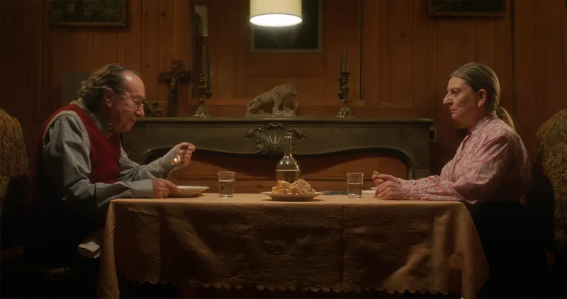
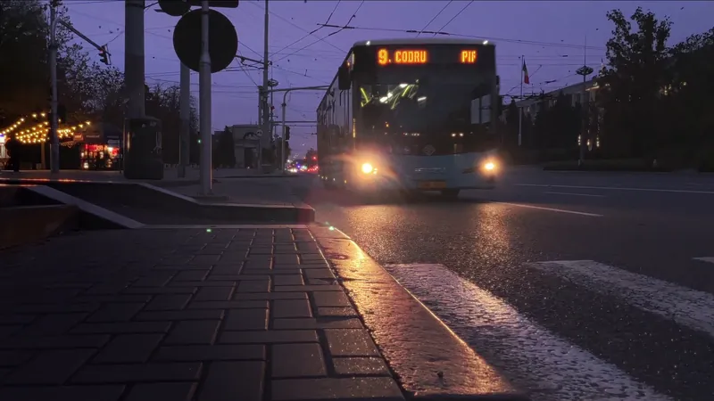
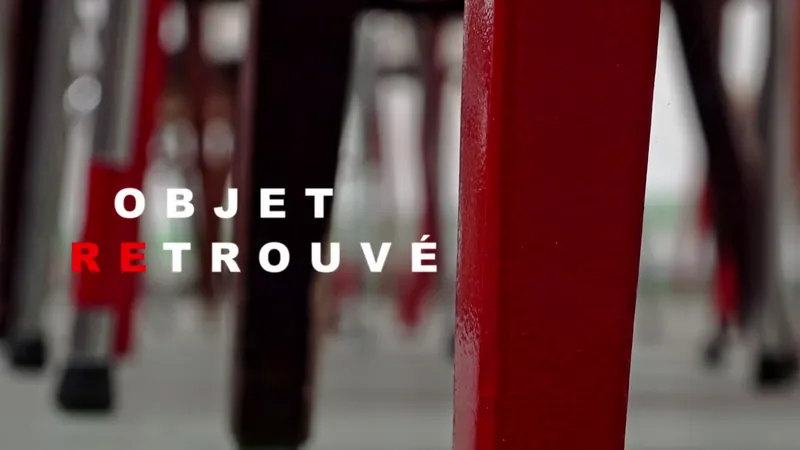
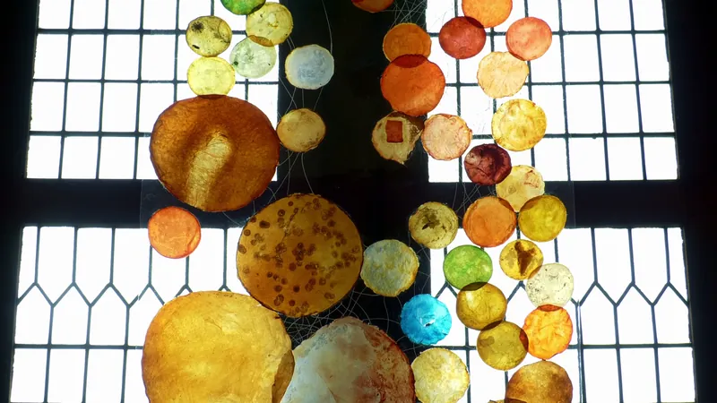

Interne — travail en cours
Moodboard
Page de travail, non indexée. À retirer du footer avant la mise en production. — 24 nov. 2026
Références
- Haut et Court (hautetcourt.fr) : à l'arrivée, un vidéogramme plein écran ; index éditorial des films ; lecture en modale, jamais de player en dur. C'est la référence retenue pour la vitrine.
- Esprit général : sobre et élégant, blanc dominant, une seule idée par section, fait par un humain pour des humains.
Direction retenue (itération 2-3)
- Hero = vidéogramme plein écran (Tristan en premier), pastille « Voir le film » en bas à gauche.
- Réalisations = défilement horizontal film par film ; chaque film contient son propre carrousel de vidéoogrammes.
- Un seul CTA principal par page (« Discuter d'un projet »).
- Sections séparées par le blanc (96-128 px), étiquette uppercase accent + grand titre serif.
Palette
- Fond — #FFFFFF
- Texte — #1A1A1A
- Secondaire — #6B6B6B
- Filets — #E5E5E2
- Accent — #F8AE19 (touches uniquement)
- Accent texte — #9A6500 (4,96:1)
Typographie
Des films engagés qui interrogent notre époque.
Nous faisons des films qui prennent le temps d'interroger notre époque.
Picturial produit des documentaires de création, des courts-métrages de fiction et des films de commande. Corps en Instrument Sans, 16-17px, interligne 1.6.
Logo

Vidéoogrammes disponibles






Un vidéoogramme par film pour l'instant ; le carrousel par film est prêt à en recevoir d'autres (voir README).
Interdits (rappel du brief)
- Pas de dégradés violet/bleu, pas de glow, pas de glassmorphism.
- Pas d'Inter/Roboto/system-ui comme identité.
- Pas de rangées de 3 cartes identiques, pas d'emoji comme icônes, pas de « Lorem ».
- Pas de dark mode par défaut, pas de hero flou avec texte centré par-dessus, pas de confettis/parallax.
- Accent #F8AE19 jamais en grande surface ; contraste texte ≥ 4,5:1 partout.